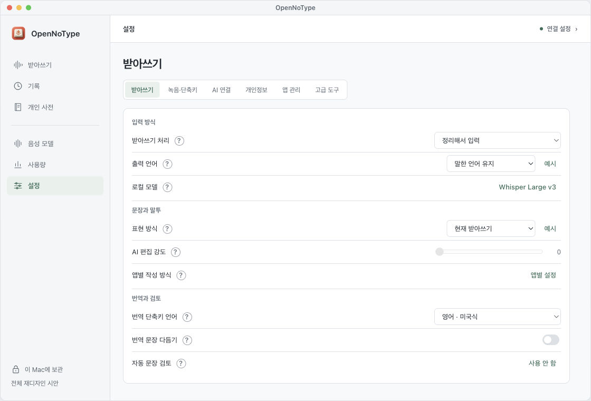
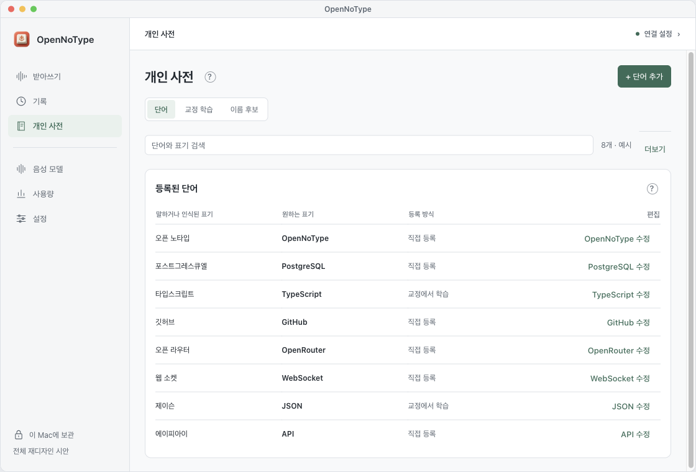
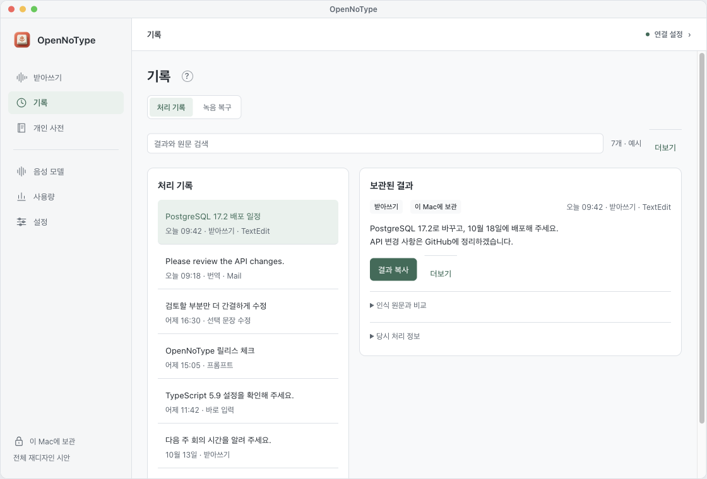
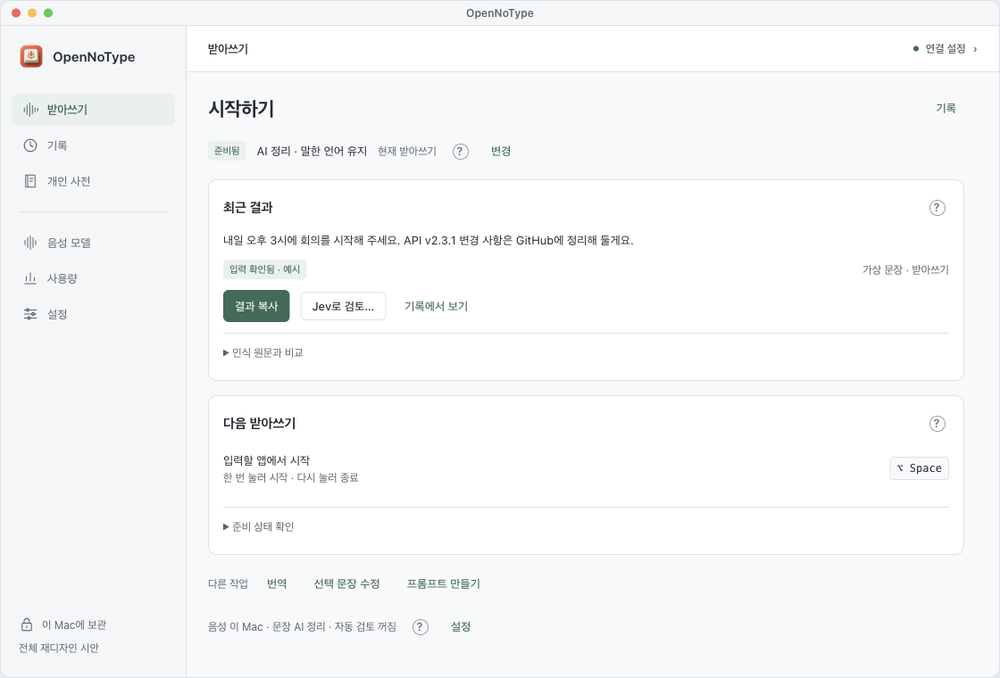

설정 · 정렬된 행과 값
기본 행 44 · 컨트롤 32 · 설명은 물음표
크기·간격·목록·설명을 앱 전체에서 통일한 설계 시안입니다. 현재 설치 앱에는 아직 적용하지 않았습니다.

기본 행 44 · 컨트롤 32 · 설명은 물음표

검색·단어 목록·추가 · 학습과 이름은 별도 탭

찾을 때는 목록 · 읽을 때는 선택한 결과

준비 상태는 한 줄 · 확인할 결과와 주요 행동 먼저